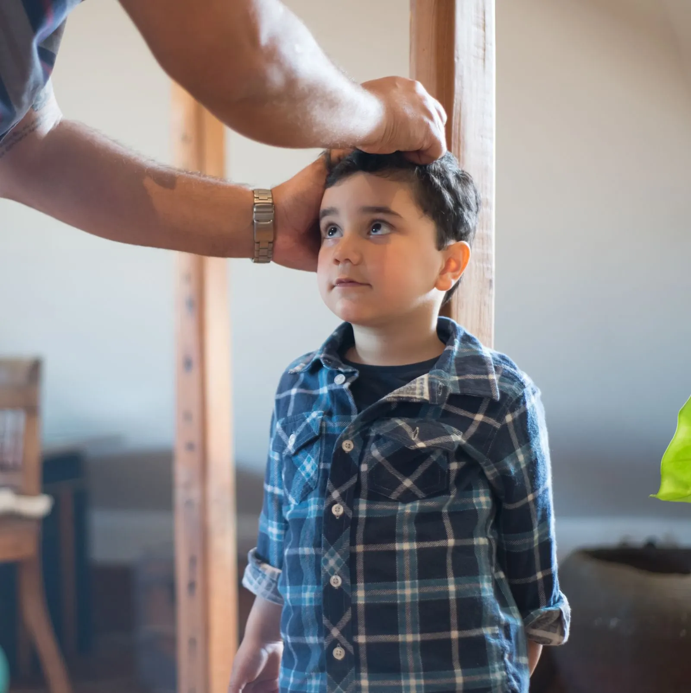
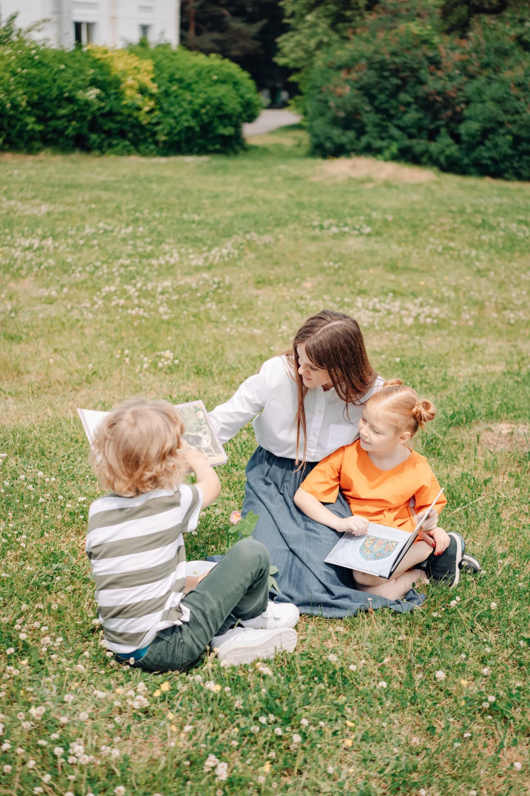
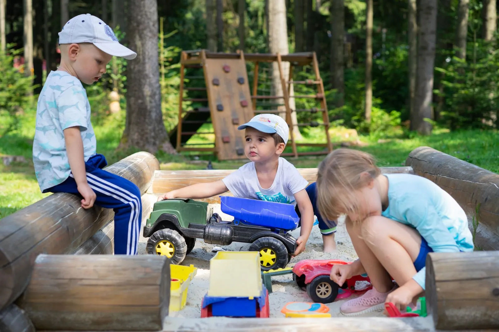
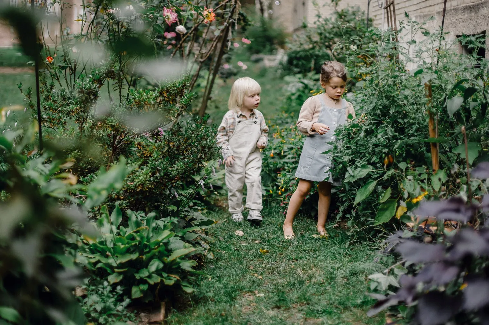
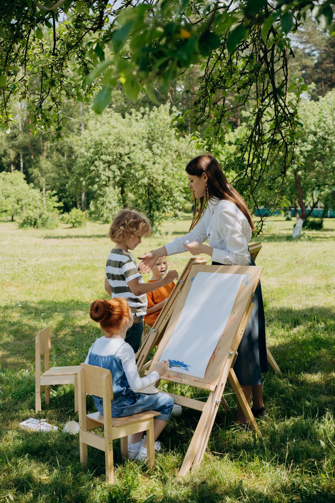
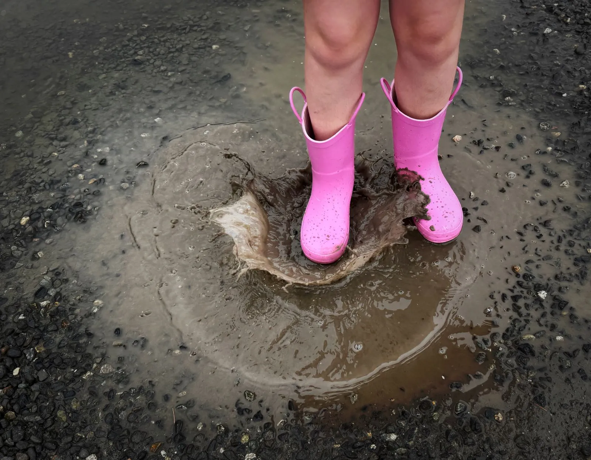

Richmond, Nelson · ages 2 to 5 · 40 children
An owner-run preschool in a 1920s villa with a big garden. A teacher for every six or seven children, four hours of a six-hour day outside, and a fee sheet you can add up.
Open Monday to Friday, 8:00 to 4:00. Visits Tuesday and Thursday mornings.


150 cm · the gate latch
The garden gate has two latches, both above a five-year-old's reach. Every child is signed in and out in the book by the door, and we count aloud at every door we go through.
Yesterday's count
Twelve morning children go home at 12:30. We count whoever is in.
140 cm · the noticeboard
The same sheet is pinned by our front door. Three-to-five-year-olds get 20 hours a week free under 20 Hours ECE; we claim it for you and you sign one page.
Fees for 2027
Sessions: morning 8:30 to 12:30, full day 8:30 to 2:30. Earlier and later at the hourly rate.
| Age | Rate |
|---|---|
| 2 | $11.50 an hour. Not funded. |
| 3 to 5 | First 20 hours a week free (up to 6 a day), then $9.00 an hour. |
Three example weeks
| Two-year-old, 3 mornings (12 h × $11.50) | $138 |
| Three-year-old, 4 full days (24 h: 20 free + 4 × $9.00) | $36 |
| Four-year-old, 5 mornings (20 h, all free) | $0 |
Staff and ratios · 103 to 87 cm
Two teachers stay with each group all year. The regulations allow one adult to ten; we never go past one to seven. We follow Te Whāriki, the national early childhood curriculum.
About 4
2 teachers, 14 children
Ruth Mackay and Sam Dunn. One to seven. Getting ready for school without worksheets.
Mostly full days. Leaves for school at five.

About 3
2 teachers, 14 children
Tia Walker and Joe Faleolo. One to seven. The sandpit, the vegetable beds, the long table.
20 free hours start the week they turn three.

About 2
2 teachers, 12 children
Hana Aitken and Priya Nair. One to six. A smaller room, a nap room, a quieter corner of the garden.
Most twos come for mornings to begin with.
80 cm · the handle side
Most children cry at the door at least once. Three short visits before the first day make it rarer and shorter, and you stay for the first two.
Visit one
An hour, with you
You both play. We start their mark on the door.
Visit two
An hour, you in the kitchen
Close by with a cup of tea, out of sight.
Visit three
An hour on their own
We phone you at the half-hour, whatever happens.
52 cm · the little table
4 h of 6of a full day is spent in the garden, in gumboots if it rains.

We cook morning tea. Lunch comes from home; we keep it cool.
25 cm · the boot rack
Everything named, please. Gumboots live on the rack by the door all term.

10 cm · the doorstep
Tuesday or Thursday, 9:30 to 11:00, and stay for morning tea. Bring your child. We reply the same day with two times.
27 Salisbury Road, Richmond, Nelson 7020